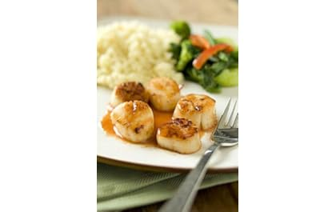

Seared Scallops with Blood Orange and Smoked Paprika Sauce

Serves: 4
Time: PT30M
Whole wheat couscous and steamed or grilled vegetables are great additions to the scallops for a complete meal. Blood orange juice adds vibrant flavor to the sauce.
Ingredients
- 1 cup blood orange juice
- 16 sea scallops
- Salt and pepper to taste
- Ground cumin, to taste
- 1 tablespoon vegetable oil
- 2 tablespoons unsalted butter
- 1/2 teaspoon smoked paprika
Instructions
- Heat blood orange juice in a medium saucepan over low heat.
- Simmer until reduced by half, about 30 minutes, stirring occasionally.
- Once juice is almost reduced, season scallops with salt, pepper and cumin on both sides.
- Heat a large cast-iron skillet over high heat until smoking.
- Add oil to skillet and sear scallops, about 1 to 2 minutes per side, until golden-brown and just cooked through.
- While scallops are searing, whisk butter into the warm reduced orange juice.
- Continue whisking until sauce is shiny and smooth.
- Whisk in smoked paprika, taste, and adjust seasoning as needed.
- Spoon a bit of sauce onto each serving plate, top with scallops, and serve immediately.
Nutritional Info
- Calories: 290
- Total Fat: 20g
- Saturated Fat: 8g
- Cholesterol: 70mg
- Sodium: 480mg
- Carbohydrates: 10g
- Dietary Fiber: 0g
- Sugars: 5g
- Protein: 20g